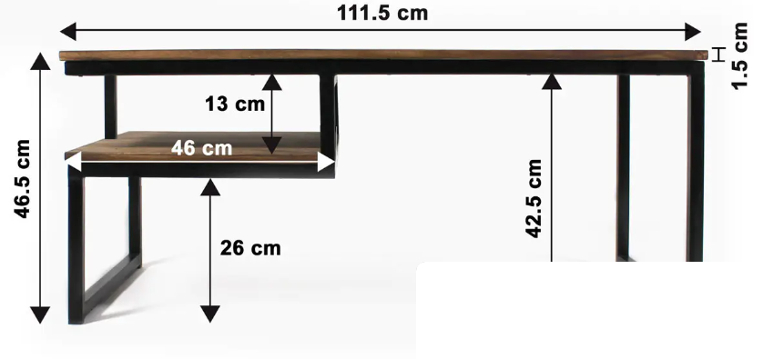

Ons verhaal
Geïnspireerd door de industriële stijl.
Voor ons ontwerp werden we vooral geïnspireerd door de combinatie van stoer zwart metaal en de warme uitstraling van hout. We wilden iets maken dat niet alleen mooi is, maar ook karakter heeft.
Het resultaat is een tafel die stevig, praktisch en modern is en tegelijk warmte uitstraalt. De extra legplank ontstond vanuit het idee dat een salontafel niet alleen mooi, maar ook nuttig moet zijn in het dagelijks leven.
